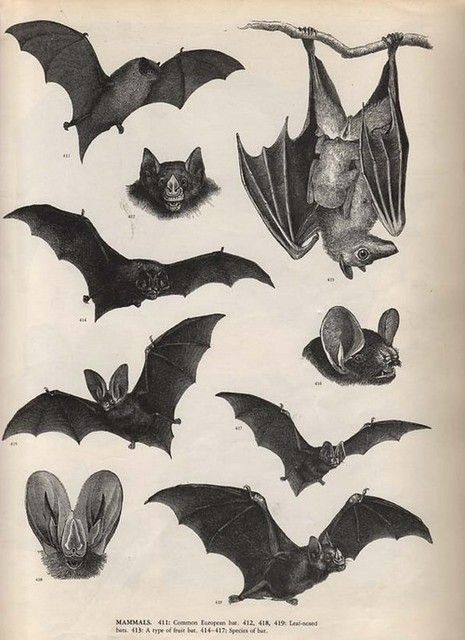
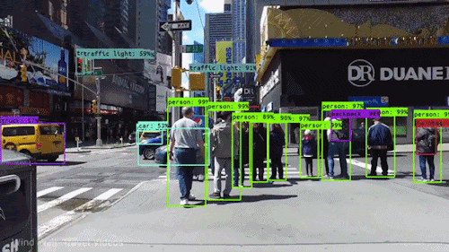

"The arrival of autonomous vehicles requires a new type of gaze—one that can renegotiate existing codes."
In the depths of a moonlit night, high above the treetops, a colony of bats stirred in their roost. Nestled snugly in the shadows of a cave, they prepared for their nightly voyage into the world. As the colony took flight, Bats marveled at the world below. To most creatures, the night was a shroud of darkness, but to the bats, it was a tapestry of sound and sensation. Through their ears, they perceived the echoes of their own calls bouncing off objects, painting a vivid picture of their surroundings.
Like we need our senses to survive, these cars need some way to detect their surroundings to survive, so they use different cameras. There are many ways the car can see because it can use radar, cameras, radios and ultrasound. Of course, any vehicle can not just pop the cameras on and move; it needs some help from the humans.
Image Classification is the process of finding out what are the specific objects in the image. This detects a rough scope of what is around them, like a pedestrian or bike. Then with the help of image localization, it provides the exact location of the objects by using boxes.

Since the car is not a human and cannot automatically know the vehicle is a car, it needs to be trained. To train the software to perform image classification, they train a convolutional neural network. Don’t worry, and it’s not as hard to understand as it seems.
A CNN is a specific type of artificial neural network used to image recognition for pixelated data (or pictures online since they’re just made from pixels.
A neural network is a software program based on neurons in the human brain to replicate how we identify or evaluate things.
If you are still lost, let’s take it to a smaller scale. If I gave you an apple and a banana, how do you know which is which? You first give out the characteristics; for example, an apple is red, round and a banana is yellow and long. Although they are both fruits, you still figure it out. When you were younger, you probably saw an apple for the first time, and that’s when you learned that this thing, an edible red thing, is an apple. As you grew older, you started getting more knowledge of different varieties of apples to identify other fruits.

Currently, human perception and its means of gathering information define the visual and sonic stimuli that regulate urban traffic. Driverless sensors struggle with this information. The repetition of signage, for example, which is used to capture the driver’s attention, often produces a confusing cacophony for autonomous vehicles. Dirty road graphics, signage misallocations, consecutive but contradictory traffic signs, or even the lack of sign and marking standardization are all reasons for some of the most notorious incidents involving autonomous vehicles.
The assumption that driverless cars will fully adapt to these conditions is erroneous. It overlooks the history of streetscape transformations driven by changes in vehicular technologies. More importantly, it ignores the fact that self-driving cars construct and operate according to images that are incomparable to human perception.
LiDAR uses lasers to find the distance and its surroundings. In this case, the cameras are all visual and do not depend on the ranging or detection. These cameras provide the images, and the AI programmed software analyzes them with a high level of accuracy. To help you imagine, the cameras or sensors are spread out all around the car to get a 360* view of the surroundings.
Unlike LiDAR, it uses visual data, which is then processed using computer vision, machine learning and artificial intelligence. To detect an image, there are two main steps:
Object Classification + Object Localization = Object Detection
Bats produce echolocation by emitting high frequency sound pulses through their mouth or nose and listening to the echo. With this echo, the bat can determine the size, shape and texture of objects in its environment. Bat echolocation is so sophisticated that these animals can detect an object the width of a human hair.
Shouting Bats & Whispering Bats
Bats can be broadly characterized by their echolocation calls as shouting bats and whispering bats. Big brown bats and little brown bats are shouters and produce sounds (if we could hear them) of 110 decibels or similar to the loudness of a smoke alarm. Northern long-eared bats are whispering bats and produce sounds of 60 decibels (similar to the levels of normal human conversation). Shouters tend to forage for food in open spaces; whisperers glean insects from the foliage of trees and forage in the cluttered environments of forest interiors.
The process that makes this happen is pretty simple. You produced sound by rushing air from your lungs past your vibrating vocal chords. These vibrations caused fluctuations in the rushing air, which formed a sound wave. A sound wave is just a moving pattern of fluctuations in air pressure. The changing air pressure pushes surrounding air particles out and then pulls them back in. These particles then push and pull the particles next to them, passing on the energy and pattern of the sound. In this way, sound can travel long distances through the air. The pitch and tone of the sound are determined by the frequency of the air-pressure fluctuations, which is determined by the way you move your vocal chords.
The bat can also determine where the object is, how big it is and in what direction it is moving. The bat can tell if an insect is to the right or left by comparing when the sound reaches its right ear to when the sound reaches its left ear: If the sound of the echo reaches the right ear before it reaches the left ear, the insect is obviously to the right. The bat's ears have a complex collection of folds that help it determine an insect's vertical position. Echoes coming from below will hit the folds of the outer ear at a different point than sounds coming from above, and so will sound different when they reach the bat's inner ear.
Radar is an object-detection system that use radio waves to determine the range, angle, or velocity of objects. It has good range but low resolution, especially when compared to ultrasonic sensors and LiDAR scanners. It is good at near-proximity detection but less effective than sonar. It works equally well in light and dark conditions and perform through fog, rain, and snow. Although it is very effective at determining the relative speed of traffic, it does not differentiate color or contrast, rendering it useless for optical pattern recognition, which is critical for monitoring the speed of other vehicles and surrounding objects. Radar detects movement, is able to construct relational maps, and captures cross-sections of the electromagnetic spectrum.
Ultrasonic sensors are object-detection systems that emit ultrasonic sound waves and measure their speed of return to define distance. They offer a very poor range, but they are extraordinarily effective in close-range 3D mapping. Compared to radio waves, ultrasonic sound waves are slow. Thus, differences of less than a centimeter are detectable. These sensors work regardless of light levels and also perform well in snow, fog, and rain. They do not detect color contrast or allow for optical character recognition but they are extremely useful in determining speed. They are essential for automatic parking and the avoidance of low speed collisions. They construct detailed 3D maps of the temporary arrangements of objects in proximity to the car.